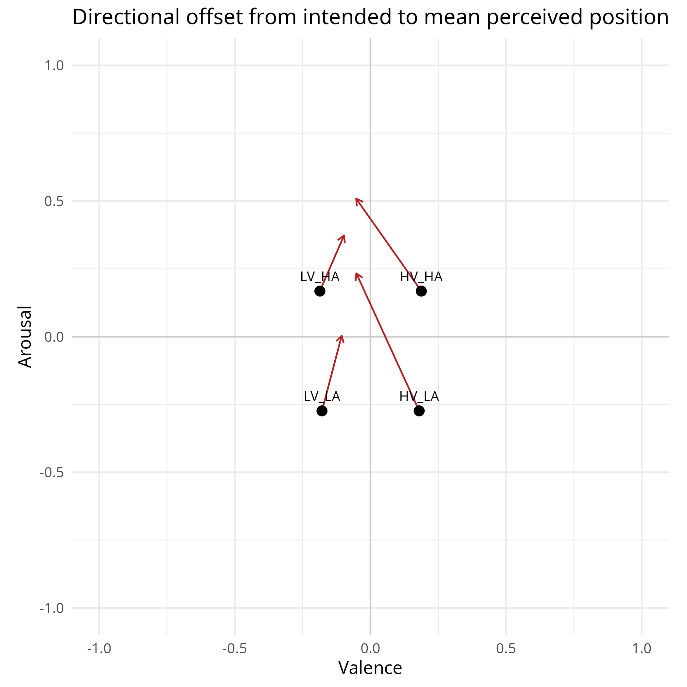
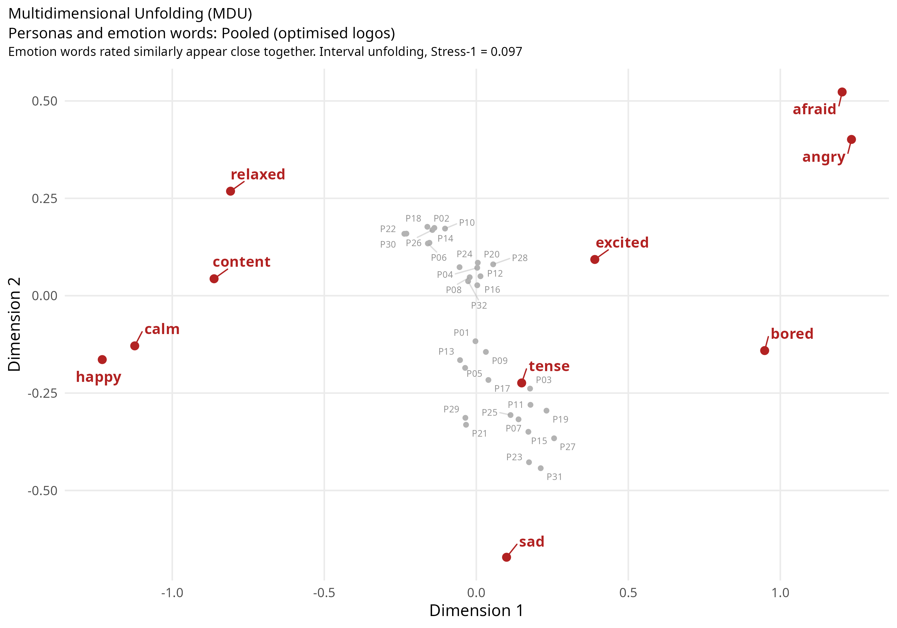

Affective Sonic Agents for Emotion Alignment
A reproducible multi-agent research system for generating sonic logos toward intended emotion and measuring where independent estimators and persona-conditioned synthetic audiences agree or disagree.
Problem
How closely does a generated sonic logo match its intended emotion, and how does that alignment vary across synthetic audience personas?
Contribution
Designed a multi-agent generation and evaluation pipeline, with controlled stimuli, independent emotion judging, and OCEAN-conditioned audience experiments.
Result
The recorded independent-judge evaluation reports mean alignment distance decreasing from 0.408 to 0.344 across matched stimuli. These are computational results from synthetic audiences, not a human listening study.
Design takeaway
Independent evaluation and repeatable experiment controls make alignment claims easier to assess. Synthetic audience findings need human validation before being generalised to real listeners.
What makes it portfolio-grade: this is not a prompt demo. It is a staged experimental system with separate generation, optimisation, independent scoring, persona-conditioned audience simulation and statistical analysis. The central design decision is separation of roles: the estimator used to guide optimisation is not the primary estimator used to judge whether optimisation worked.
Evidence of quality
How the system is structured


Engineering depth
- Estimator independence: coach and primary judge are frozen separately and trained from different corpora, preventing the optimiser from being evaluated only by the model it was designed to satisfy.
- Protocol integrity: generation manifests record targets, parameters, iteration history and estimator positions; audience responses are bound to the protocol with hashes and resume checks.
- Target-blind audience design: audience agents receive acoustic feature descriptions rather than the brand target or estimator prediction, keeping the audience layer structurally separated from the intended answer.
- Multiple statistical lenses: paired tests, mixed-effects models, sign/Wilcoxon checks, control agents, centred-distance diagnostics, rank agreement and MDU reduce dependence on any single result.
- Reproducible execution: preflight checks, staged shell commands, deterministic references and explicit output directories make the research pipeline inspectable from a fresh checkout.
Integrated technologies
The project is intentionally shown as a system, not just a language label. These are the technologies that materially participate in the implementation.
Explore the implementation
Repository links are kept close to the case study so a reviewer can move directly from the architectural claim to the source.